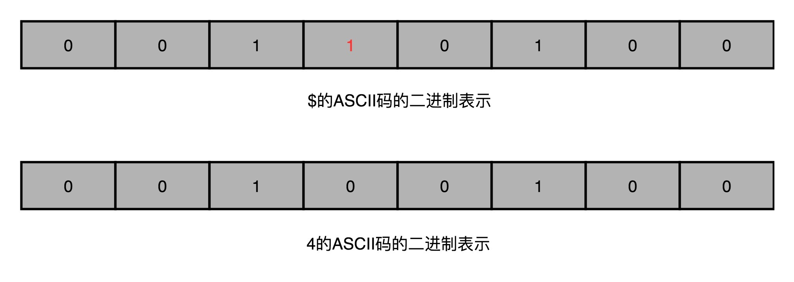

- 00 开篇词 为什么你需要学习计算机组成原理？.md.html
- 01 冯·诺依曼体系结构：计算机组成的金字塔.md.html
- 02 给你一张知识地图，计算机组成原理应该这么学.md.html
- 03 通过你的CPU主频，我们来谈谈“性能”究竟是什么？.md.html
- 04 穿越功耗墙，我们该从哪些方面提升“性能”？.md.html
- 05 计算机指令：让我们试试用纸带编程.md.html
- 06 指令跳转：原来if...else就是goto.md.html
- 07 函数调用：为什么会发生stack overflow？.md.html
- 08 ELF和静态链接：为什么程序无法同时在Linux和Windows下运行？.md.html
- 09 程序装载：“640K内存”真的不够用么？.md.html
- 10 动态链接：程序内部的“共享单车”.md.html
- 11 二进制编码：“手持两把锟斤拷，口中疾呼烫烫烫”？.md.html
- 12 理解电路：从电报机到门电路，我们如何做到“千里传信”？.md.html
- 13 加法器：如何像搭乐高一样搭电路（上）？.md.html
- 14 乘法器：如何像搭乐高一样搭电路（下）？.md.html
- 15 浮点数和定点数（上）：怎么用有限的Bit表示尽可能多的信息？.md.html
- 16 浮点数和定点数（下）：深入理解浮点数到底有什么用？.md.html
- 17 建立数据通路（上）：指令加运算=CPU.md.html
- 18 建立数据通路（中）：指令加运算=CPU.md.html
- 19 建立数据通路（下）：指令加运算=CPU.md.html
- 20 面向流水线的指令设计（上）：一心多用的现代CPU.md.html
- 21 面向流水线的指令设计（下）：奔腾4是怎么失败的？.md.html
- 22 冒险和预测（一）：hazard是“危”也是“机”.md.html
- 23 冒险和预测（二）：流水线里的接力赛.md.html
- 24 冒险和预测（三）：CPU里的“线程池”.md.html
- 25 冒险和预测（四）：今天下雨了，明天还会下雨么？.md.html
- 26 Superscalar和VLIW：如何让CPU的吞吐率超过1？.md.html
- 27 SIMD：如何加速矩阵乘法？.md.html
- 28 异常和中断：程序出错了怎么办？.md.html
- 29 CISC和RISC：为什么手机芯片都是ARM？.md.html
- 30 GPU（上）：为什么玩游戏需要使用GPU？.md.html
- 31 GPU（下）：为什么深度学习需要使用GPU？.md.html
- 32 FPGA、ASIC和TPU（上）：计算机体系结构的黄金时代.md.html
- 33 解读TPU：设计和拆解一块ASIC芯片.md.html
- 34 理解虚拟机：你在云上拿到的计算机是什么样的？.md.html
- 35 存储器层次结构全景：数据存储的大金字塔长什么样？.md.html
- 36 局部性原理：数据库性能跟不上，加个缓存就好了？.md.html
- 37 理解CPU Cache（上）：“4毫秒”究竟值多少钱？.md.html
- 38 高速缓存（下）：你确定你的数据更新了么？.md.html
- 39 MESI协议：如何让多核CPU的高速缓存保持一致？.md.html
- 40 理解内存（上）：虚拟内存和内存保护是什么？.md.html
- 41 理解内存（下）：解析TLB和内存保护.md.html
- 42 总线：计算机内部的高速公路.md.html
- 43 输入输出设备：我们并不是只能用灯泡显示“0”和“1”.md.html
- 44 理解IO_WAIT：IO性能到底是怎么回事儿？.md.html
- 45 机械硬盘：Google早期用过的“黑科技”.md.html
- 46 SSD硬盘（上）：如何完成性能优化的KPI？.md.html
- 47 SSD硬盘（下）：如何完成性能优化的KPI？.md.html
- 48 DMA：为什么Kafka这么快？.md.html
- 49 数据完整性（上）：硬件坏了怎么办？.md.html
- 50 数据完整性（下）：如何还原犯罪现场？.md.html
- 51 分布式计算：如果所有人的大脑都联网会怎样？.md.html
- 52 设计大型DMP系统（上）：MongoDB并不是什么灵丹妙药.md.html
- 53 设计大型DMP系统（下）：SSD拯救了所有的DBA.md.html
- 54 理解Disruptor（上）：带你体会CPU高速缓存的风驰电掣.md.html
- 55 理解Disruptor（下）：不需要换挡和踩刹车的CPU，有多快？.md.html
- 结束语 知也无涯，愿你也享受发现的乐趣.md.html
49 数据完整性（上）：硬件坏了怎么办？
2012 年的时候，我第一次在工作中，遇到一个因为硬件的不可靠性引发的 Bug。正是因为这个 Bug，让我开始逐步花很多的时间，去复习回顾整个计算机系统里面的底层知识。
当时，我正在 MediaV 带领一个 20 多人的团队，负责公司的广告数据和机器学习算法。其中有一部分工作，就是用 Hadoop 集群处理所有的数据和报表业务。当时我们的业务增长很快，所以会频繁地往 Hadoop 集群里面添置机器。2012 年的时候，国内的云计算平台还不太成熟，所以我们都是自己采购硬件，放在托管的数据中心里面。
那个时候，我们的 Hadoop 集群服务器，在从 100 台服务器往 1000 台服务器走。我们觉得，像 Dell 这样品牌厂商的服务器太贵了，而且能够提供的硬件配置和我们的期望也有差异。于是，运维的同学开始和 OEM 厂商合作，自己定制服务器，批量采购硬盘、内存。
那个时候，大家都听过 Google 早期发展时，为了降低成本买了很多二手的硬件来降低成本，通过分布式的方式来保障系统的可靠性的办法。虽然我们还没有抠门到去买二手硬件，不过当时，我们选择购买了普通的机械硬盘，而不是企业级的、用在数据中心的机械硬盘；采购了普通的内存条，而不是带 ECC 纠错的服务器内存条，想着能省一点儿是一点儿。
单比特翻转：软件解决不了的硬件错误
忽然有一天，我们最大的、每小时执行一次的数据处理报表应用，完成时间变得比平时晚了不少。一开始，我们并没有太在意，毕竟当时数据量每天都在增长，慢一点就慢一点了。但是，接着糟糕的事情开始发生了。
一方面，我们发现，报表任务有时候在一个小时之内执行不完，接着，偶尔整个报表任务会执行失败。于是，我们不得不停下手头开发的工作，开始排查这个问题。
用过 Hadoop 的话，你可能知道，作为一个分布式的应用，考虑到硬件的故障，Hadoop 本身会在特定节点计算出错的情况下，重试整个计算过程。之前的报表跑得慢，就是因为有些节点的计算任务失败过，只是在重试之后又成功了。进一步分析，我们发现，程序的错误非常奇怪。有些数据计算的结果，比如“34+23”，结果应该是“57”，但是却变成了一个美元符号“$”。
前前后后折腾了一周，我们发现，从日志上看，大部分出错的任务都在几个固定的硬件节点上。
另一方面，我们发现，问题出现在我们新的一批自己定制的硬件上架之后。于是，和运维团队的同事沟通近期的硬件变更，并且翻阅大量 Hadoop 社区的邮件组列表之后，我们有了一个大胆的推测。
我们推测，这个错误，来自我们自己定制的硬件。定制的硬件没有使用 ECC 内存，在大量的数据中，内存中出现了单比特翻转（Single-Bit Flip）这个传说中的硬件错误。
那这个符号是怎么来的呢？是由于内存中的一个整数字符，遇到了一次单比特翻转转化而来的。 它的 ASCII 码二进制表示是 0010 0100，所以它完全可能来自 0011 0100 遇到一次在第 4 个比特的单比特翻转，也就是从整数“4”变过来的。但是我们也只能推测是这个错误，而不能确信是这个错误。因为单比特翻转是一个随机现象，我们没法稳定复现这个问题。

ECC 内存的全称是 Error-Correcting Code memory，中文名字叫作纠错内存。顾名思义，就是在内存里面出现错误的时候，能够自己纠正过来。
在和运维同学沟通之后，我们把所有自己定制的服务器的内存替换成了 ECC 内存，之后这个问题就消失了。这也使得我们基本确信，问题的来源就是因为没有使用 ECC 内存。我们所有工程师的开发用机在 2012 年，也换成了 32G 内存。是的，换下来的内存没有别的去处，都安装到了研发团队的开发机上。
奇偶校验和校验位：捕捉错误的好办法
其实，内存里面的单比特翻转或者错误，并不是一个特别罕见的现象。无论是因为内存的制造质量造成的漏电，还是外部的射线，都有一定的概率，会造成单比特错误。而内存层面的数据出错，软件工程师并不知道，而且这个出错很有可能是随机的。遇上随机出现难以重现的错误，大家肯定受不了。我们必须要有一个办法，避免这个问题。
其实，在 ECC 内存发明之前，工程师们已经开始通过奇偶校验的方式，来发现这些错误。
奇偶校验的思路很简单。我们把内存里面的 N 位比特当成是一组。常见的，比如 8 位就是一个字节。然后，用额外的一位去记录，这 8 个比特里面有奇数个 1 还是偶数个 1。如果是奇数个 1，那额外的一位就记录为 1；如果是偶数个 1，那额外的一位就记录成 0。那额外的一位，我们就称之为校验码位。

如果在这个字节里面，我们不幸发生了单比特翻转，那么数据位计算得到的校验码，就和实际校验位里面的数据不一样。我们的内存就知道出错了。
除此之外，校验位有一个很大的优点，就是计算非常快，往往只需要遍历一遍需要校验的数据，通过一个 O(N) 的时间复杂度的算法，就能把校验结果计算出来。
校验码的思路，在很多地方都会用到。
比方说，我们下载一些软件的时候，你会看到，除了下载的包文件，还会有对应的 MD5 这样的哈希值或者循环冗余编码（CRC）的校验文件。这样，当我们把对应的软件下载下来之后，我们可以计算一下对应软件的校验码，和官方提供的校验码去做个比对，看看是不是一样。
如果不一样，你就不能轻易去安装这个软件了。因为有可能，这个软件包是坏的。但是，还有一种更危险的情况，就是你下载的这个软件包，可能是被人植入了后门的。安装上了之后，你的计算机的安全性就没有保障了。
不过，使用奇偶校验，还是有两个比较大的缺陷。
第一个缺陷，就是奇偶校验只能解决遇到单个位的错误，或者说奇数个位的错误。如果出现 2 个位进行了翻转，那么这个字节的校验位计算结果其实没有变，我们的校验位自然也就不能发现这个错误。
第二个缺陷，是它只能发现错误，但是不能纠正错误。所以，即使在内存里面发现数据错误了，我们也只能中止程序，而不能让程序继续正常地运行下去。如果这个只是我们的个人电脑，做一些无关紧要的应用，这倒是无所谓了。
但是，你想一下，如果你在服务器上进行某个复杂的计算任务，这个计算已经跑了一周乃至一个月了，还有两三天就跑完了。这个时候，出现内存里面的错误，要再从头跑起，估计你内心是崩溃的。
所以，我们需要一个比简单的校验码更好的解决方案，一个能够发现更多位的错误，并且能够把这些错误纠正过来的解决方案，也就是工程师们发明的 ECC 内存所使用的解决方案。
我们不仅能捕捉到错误，还要能够纠正发生的错误。这个策略，我们通常叫作纠错码（Error Correcting Code）。它还有一个升级版本，叫作纠删码（Erasure Code），不仅能够纠正错误，还能够在错误不能纠正的时候，直接把数据删除。无论是我们的 ECC 内存，还是网络传输，乃至硬盘的 RAID，其实都利用了纠错码和纠删码的相关技术。
想要看看我们怎么通过算法，怎么配置硬件，使得我们不仅能够发现单个位的错误，而能发现更多位的错误，你一定要记得跟上下一讲的内容。
总结延伸
好了，让我们一起来总结一下今天的内容。
我给你介绍了我自己亲身经历的一个硬件错误带来的 Bug。由于没有采用 ECC 内存，导致我们的数据处理中，出现了大量的单比特数据翻转的错误。这些硬件带来的错误，其实我们没有办法在软件层面解决。
如果对于硬件以及硬件本身的原理不够熟悉，恐怕这个问题的解决方案还是遥遥无期。如果你对计算机组成原理有所了解，并能够意识到，在硬件的存储层有着数据验证和纠错的需求，那你就能在有限的时间内定位到问题所在。
进一步地，我为你简单介绍了奇偶校验，也就是如何通过冗余的一位数据，发现在硬件层面出现的位错误。但是，奇偶校验以及其他的校验码，只能发现错误，没有办法纠正错误。所以，下一讲，我们一起来看看，怎么利用纠错码这样的方式，来解决问题。
推荐阅读
我推荐你去深入阅读一下 Wikipedia 里面，关于CRC的内容，了解一下，这样的校验码的详细算法。